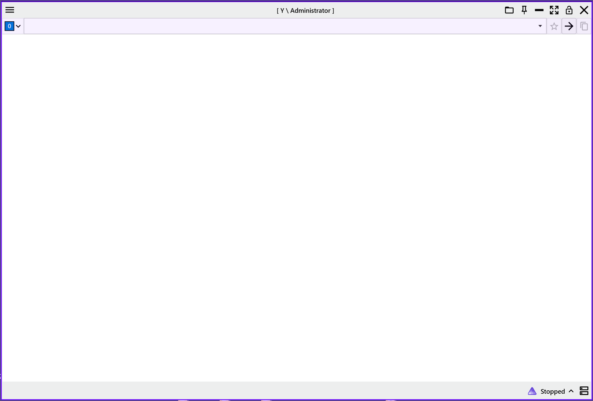
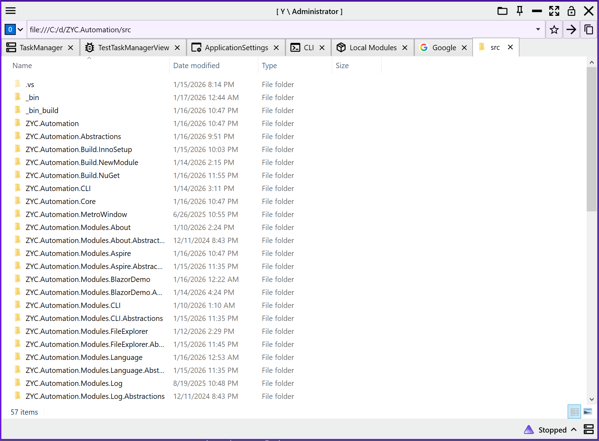
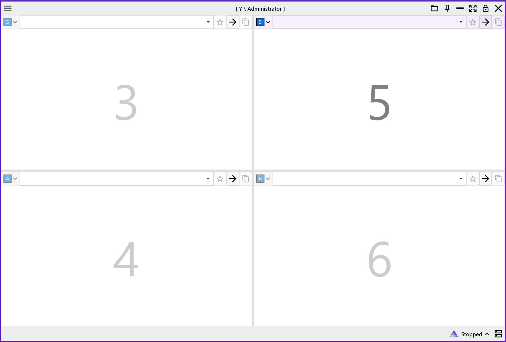
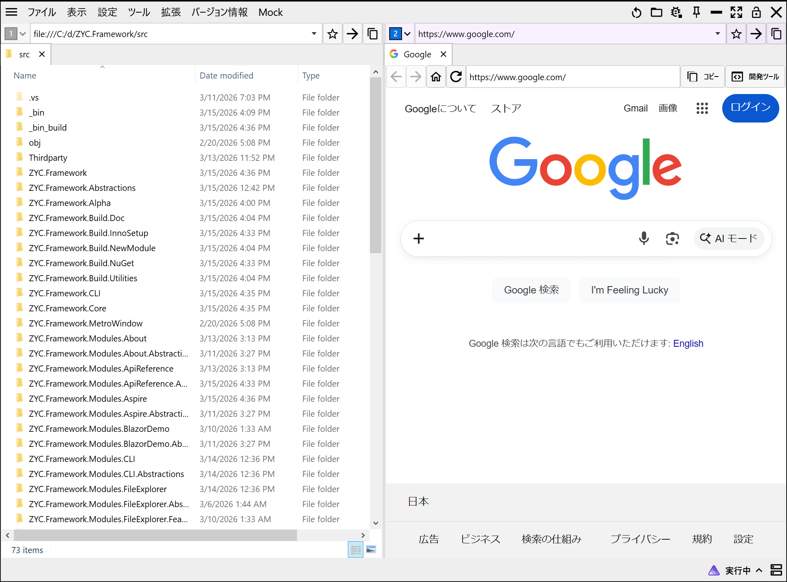
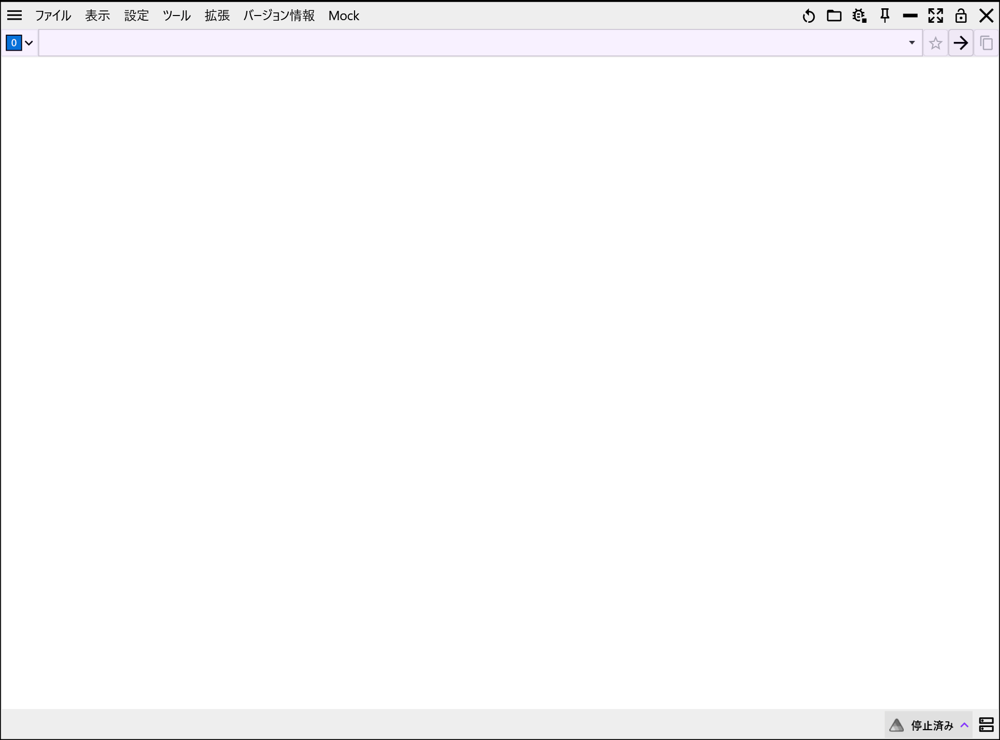
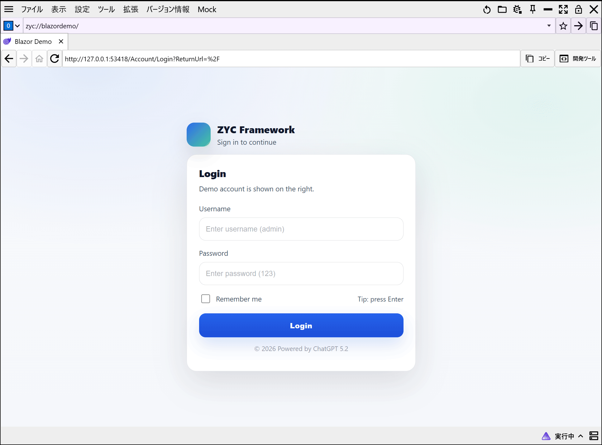
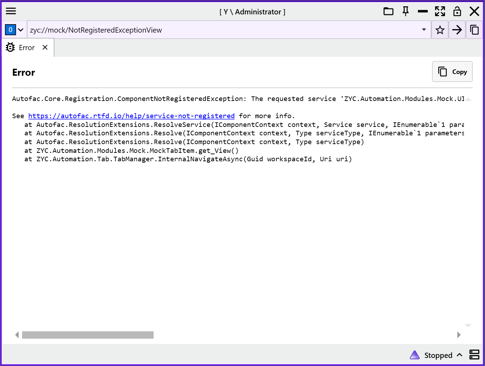
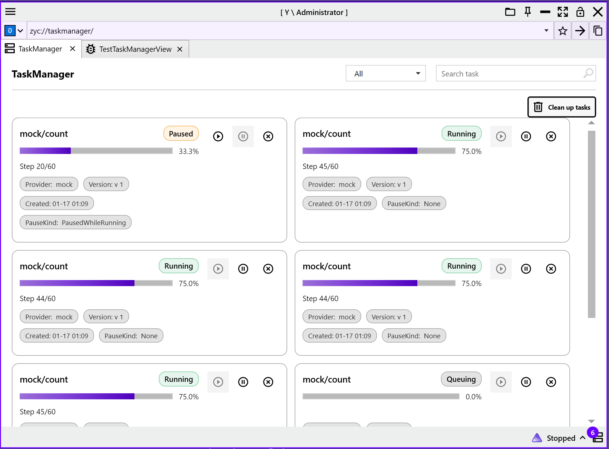

English | 日本語 | 简体中文 | 繁體中文 | 한국어 |
ZYC.Framework
.NET 10 と WPF で構築した、高性能・モジュール型・拡張可能なデスクトップ自動化フレームワーク。


📖 概要
ZYC.Framework は、WPF の表現力と .NET 10 の最新機能を活かした、モダンなデスクトップ自動化ソリューションです。モジュール指向のアーキテクチャにより、複雑な自動化システムの開発をシンプルにします。
また、本プロジェクトは分散アプリケーションのオーケストレーションのために .NET Aspire を深く統合しています。さらに Blazor と WebView2 を利用したハイブリッド構成にも対応しており、Web / ネイティブのどちらの技術スタックも柔軟に選択できます。
✨ 主な特長
- モジュール型アーキテクチャ：ビジネスロジックを疎結合化し、動的ロードや独立開発を支援します。
- モダン UI：WPF をベースに、マルチワークスペース（Multi-Workspace）および マルチタブ（Multi-Tab）をサポートします。
- ハイブリッド開発：
- WebView2 を統合し、モダンな Web アプリをデスクトップに埋め込み可能。
- Blazor を統合し、Web コンポーネントとデスクトップ側ロジックをシームレスに再利用。
- クラウドネイティブ対応：.NET Aspire を内蔵し、サービス発見・ガバナンス・デプロイを簡素化します。
- エンタープライズ向け内蔵機能：
- タスク管理：タスクのスケジューリングとライフサイクル管理。
- 例外処理：グローバル例外の捕捉と診断のための仕組み。
- ローカライズ：多言語対応のためのフレームワークを内蔵。
🛠️ 技術スタック
- Runtime: .NET 10 SDK
- UI Framework: WPF (Windows Presentation Foundation)
- Hybrid UI: WebView2 + Blazor
- Orchestration: .NET Aspire
- Architecture: Modular Monolith / Plugin-based
🚀 クイックスタート
詳細な手順はこちら：
👉 クイックスタート (quick-start.ja.md)
プロジェクト作成
推奨される開始方法はグローバル dotnet tool です。CLI をインストールまたは更新し、zyc new でホスト プロジェクトを作成します：
dotnet tool install --global ZYC.Framework.CLI --version 1.4.0
dotnet tool update --global ZYC.Framework.CLI --version 1.4.0
zyc new MyCompany.Tools --template minimal
手動で統合する場合は、コア パッケージを NuGet から直接追加することもできます：
dotnet add package ZYC.Framework.Alpha --version 1.4.0
ドキュメント
| ガイド | 目的 |
|---|---|
| クイックスタート | プロジェクト作成と手動セットアップの代替手順を確認します。 |
| アーキテクチャ | 起動、モジュール ロード、構成、ナビゲーション、ランタイム サービスを理解します。 |
| ナビゲーションとワークスペース | URI ナビゲーション、タブ、ワークスペース、復元タイミングを扱います。 |
| 拡張ポイント | モジュールがホストを拡張できる公開ポイントを確認します。 |
| 組み込みモジュール | 組み込みモジュールと主な責務を確認します。 |
| モジュール開発 | 契約、ModuleBase、メニュー、タブを持つ runtime module を作成します。 |
| プロジェクト テンプレート | minimal と modular の CLI テンプレートを選択・理解します。 |
| トラブルシューティング | CLI、モジュール ロード、ルーティング、NuGet モジュール、Aspire、ターミナルの問題を診断します。 |
主な機能
コアフレームワーク
| 機能 | 説明 |
|---|---|
| モジュールアーキテクチャ | 機能をモジュール単位で構成し、動的ロードと拡張をサポート。 |
| マルチワークスペース | ワークスペースの分割・結合・並び替え・方向変更に対応。 |
| マルチタブナビゲーション | URI ベースのタブナビゲーション、復元、ワークスペース間移動。 |
| 拡張可能メニュー | メインメニュー、ハンバーガーメニュー、タイトルバーなどの拡張ポイント。 |
| 通知システム | Toast / Banner による通知表示。 |
| UI インタラクション | BusyWindow、Overlay、ドラッグ＆ドロップ処理などを提供。 |
| ハイブリッド UI | WebView2 と Blazor によるハイブリッド UI 構築。 |
| 設定・状態管理 | 設定や状態、タスク履歴のローカル保存。 |
| シングルインスタンス | アプリケーションの単一インスタンス起動制御。 |
| MCP 公開 | フレームワーク機能を MCP ツールとして公開可能。 |
組み込みモジュール
README には概要だけを残します。現在のモジュール一覧、ロード時の注意点、各モジュールの責務は 組み込みモジュール を参照してください。
開発・配布
| 機能 | 説明 |
|---|---|
| CLI ツール | コマンドラインインターフェース。 |
| モジュールテンプレート | 新規モジュール生成テンプレート。 |
| ドキュメント生成 | README / ドキュメント生成。 |
| NuGet パッケージ | NuGet パッケージ作成。 |
| インストーラ | デスクトップインストーラ生成。 |
📸 UI プレビュー
|
 ワークスペース表示 |
 マルチタブ表示 |
|
 複数ワークスペース |
 複数ワークスペース + タブ |
|
 Aspire ダッシュボード |
 Blazor（認証付き） |
|
 例外処理 |
 タスク管理 |
📄 ライセンス
本プロジェクトは MIT License のもとで公開されています。
💖 謝辞
本プロジェクトは以下の OSS を利用し、また一部実装を参考にしています：
- MahApps.Metro: UI フレームワーク。
- MdXaml: Markdown 表示。
- titanium-web-proxy: プロキシのコア。
- EasyWindowsTerminalControl: ターミナル統合。
ライセンスおよび著作権は各プロジェクトの作者に帰属します。 本リポジトリは各ライセンス条項に従って利用・参照しています。
🤝 コントリビューション
Issue / Pull Request は歓迎です。改善提案やバグ報告があれば、お気軽に Issue を立ててください。